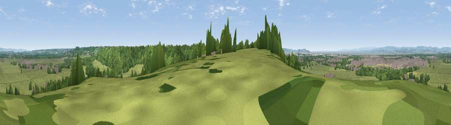

Viewpoint near Easter Compton
#15793 in England · top 25% of its area beats it · near Easter ComptonWhere it is
The exact computed spot (ST 56425 81625). Click the marker for map links.
The view, rendered

A 360° render of this exact spot computed from the terrain model, tree cover and land cover — summer colours, afternoon light, calibrated against photographs of famous viewpoints. Real trees, hedges and buildings will differ in detail.
The panorama
Grey silhouette: terrain skyline in each direction (720 bearings, Earth curvature and refraction included). Dashed green: skyline with trees (+15 m) and buildings (+8 m) as obstacles. Blue strip: how far the ground is visible on each bearing.
Where the view opens
Wedge length = distance to the farthest visible ground on that bearing (vegetation-aware). Rings at 10, 25 and 50 km.
What fills the view
64% grassland · 24% woodland · 8% built-up · 2% water · 2% cropland
Angular shares of the visible panorama (visual magnitude), not map area. Landscape diversity 0.44 (0–1 Shannon).
Key numbers
More beautiful places nearby
The staircase of upgrades: each row has a higher view potential than everything closer. Driving times are estimates from straight-line distance, calibrated against real road routing — check an actual route before setting out.
| Place | Direction | Drive | Score |
|---|---|---|---|
| Viewpoint near Hallen | SSW · 2 km | ~5 min | 58.2 |
| Viewpoint near Almondsbury | ENE · 4 km | ~8 min | 68.3 |
| Viewpoint near Tickenham | SW · 14 km | ~26 min | 72.1 |
| Dundry Hill | S · 15 km | ~27 min | 72.4 |
| Viewpoint near Norton Malreward | SSE · 15 km | ~27 min | 72.9 |
| Dial Hill | WSW · 18 km | ~32 min | 74.9 |
| Hanging Hill | SE · 19 km | ~32 min | 76.4 |
| Viewpoint near Stinchcombe | NE · 24 km | ~39 min | 80.5 |
51.53184, -2.62958 · source: screening · position refined by local search. Computed location — check access rights before visiting.